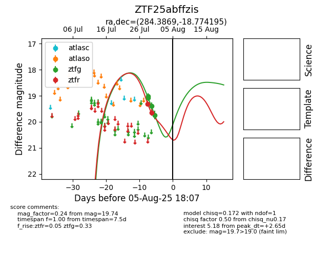

Target ZTF25abffzis at 2025-08-05 18:07, see:
FINK: fink-portal.org/ZTF25abffzis
Lasair: lasair-ztf.lsst.ac.uk/objects/ZTF25abffzis
ALeRCE: alerce.online/object/ZTF25abffzis
alt names
ZTF25abffzis (ztf,fink)
coordinates:
equatorial (ra, dec) = (284.3869,-18.77419)
galactic (l, b) = (16.7345,-9.74215)
photometry
last ztfg=19.74, ztfr=19.64
4 ztfg, 2 ztfr detections
